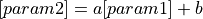
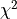

functions¶
Model functions for population fit
- functions.compute_gompertz_inflections(t, k, a, b)[source]¶
Computes the inflections points in the population growth using the Gompertz law,
 .
.- Parameters
t (array_like) – An array of times at which the population according to Gompertz law needs to be determined.
k (float) – Maximum population value.
a (float) – Gompertz law parameter determining the location of the inflection point during population growth.
b (float) – Gompertz law population growth rate constant.
- Returns
t1 (float) – First inflection point, or the time at which the derivative of the population growth is at maximum. This occurs earlier than t2.
t2 (float) – Second inflection point, or the time at which the population growth is at maximum.
- functions.d_simple_gompertz_rates(t, k, a, b)[source]¶
Computes the derivative of the population growth rate at given times using the Gompertz law,
.- Parameters
t (array_like) – An array of times at which the population according to Gompertz law needs to be determined.
k (float) – Maximum population value.
a (float) – Gompertz law parameter determining the location of the inflection point during population growth.
b (float) – Gompertz law population growth rate constant.
- Returns
rate_rate – Time derivative of the population growth rate at times t.
- Return type
array_like
- functions.gompertz(t, k, a, b)[source]¶
Computes the population at given times using the Gompertz law,
.- Parameters
t (array_like) – An array of times at which the population according to Gompertz law needs to be determined.
k (float) – Maximum population value.
a (float) – Gompertz law parameter determining the location of the inflection point during population growth.
b (float) – Gompertz law population growth rate constant.
- Returns
N – Population at times t.
- Return type
array_like
- functions.gompertz_rates(t, k, a, b)[source]¶
Computes the population growth rate at given times using the Gompertz law,
.- Parameters
t (array_like) – An array of times at which the population according to Gompertz law needs to be determined.
k (float) – Maximum population value.
a (float) – Gompertz law parameter determining the location of the inflection point during population growth.
b (float) – Gompertz law population growth rate constant.
- Returns
rate – Growth rate of the population at times t.
- Return type
array_like
- functions.pearson_chi_square(data, param1, param2, a, b)[source]¶
Computes the chi-squared test for the linear fit: .
- Parameters
data (dataframe) – Dataframe containing the treatment time and inflection point values.
param1 (string) – Input variable name.
param2 (string) – Output variable name.
a (float) – Slope of the linear relationship.
b (float) – Intercept of the linear relationship.
- Returns
chi2 (float) – Chi-square test of the linear relationship between param1 and param2.
pvalue (float) – Reduced chi-square of the linear relationship between param1 and param2.
- functions.reduced_chi_square(data, param1, param2, a, b)[source]¶
Computes the reduced  error for the linear fit: .
- Parameters
data (dataframe) – Dataframe containing the treatment time and inflection point values.
param1 (string) – Input variable name.
param2 (string) – Output variable name.
a (float) – Slope of the linear relationship.
b (float) – Intercept of the linear relationship.
- Returns
r_chi – Reduced chi-square of the linear relationship between param1 and param2.
- Return type
float